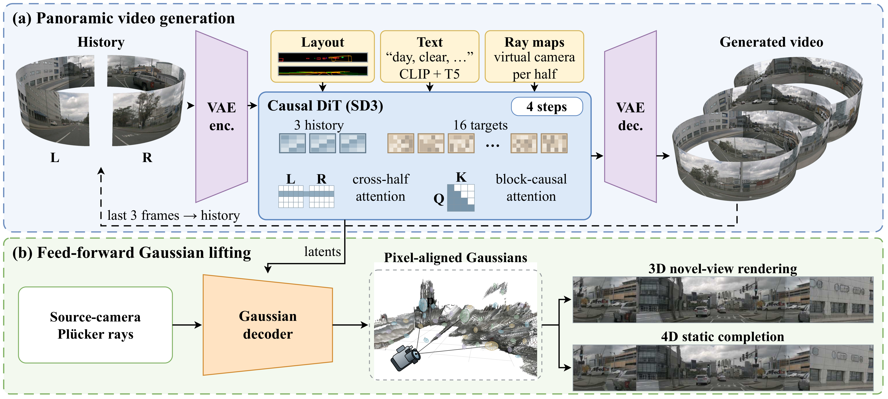
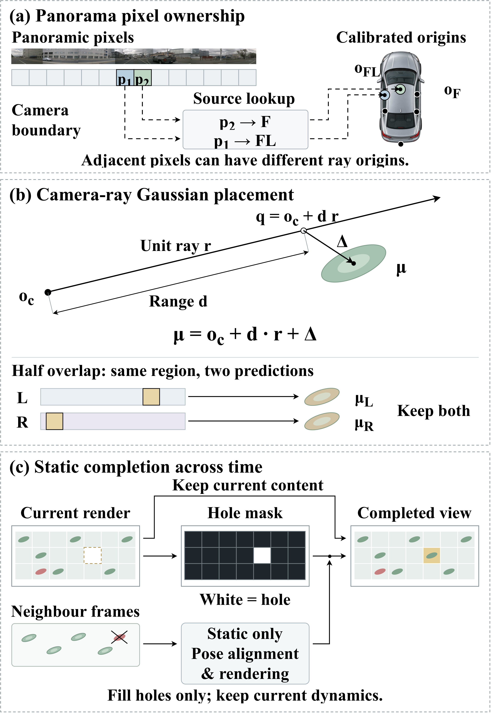
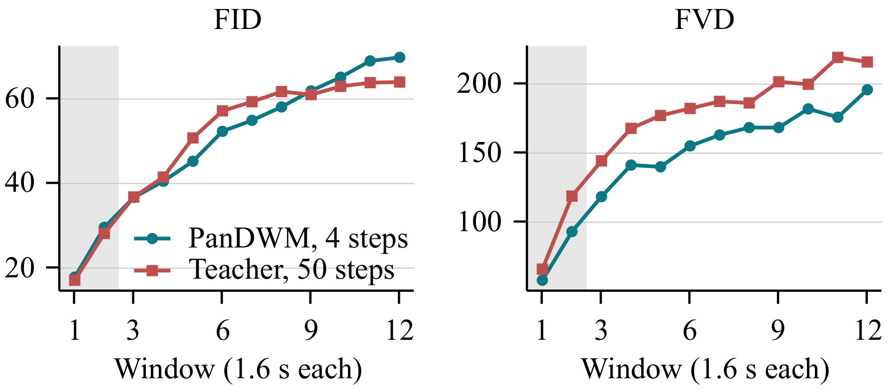
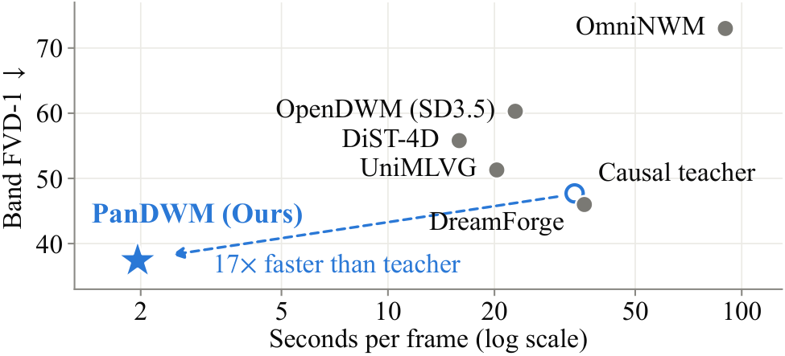

Generative driving world models typically represent the surround scene as six pinhole-camera videos, whose different optical centres and small overlaps force the model to learn cross-view consistency. PanDWM instead generates a single 360° panoramic band, split into two overlapping halves so that every camera boundary lies inside one image, and conditions it on 3D boxes and HD maps stitched into the band in the same way. The band is generated causally, one window at a time, by a four-step student distilled from a block-causal video diffusion model and trained on its own generated history. A feed-forward decoder lifts each generated frame into 3D Gaussians placed along the calibrated camera rays of its pixels; 4D Gaussians add static Gaussians from neighbouring frames, aligned by ego pose, to fill regions unseen in the current frame. On the nuScenes validation set, the student matches the FID of its 50-step causal teacher (10.1 vs. 9.93) and lowers FVD-1 from 47.7 to 37.4, at 1.96 s instead of 33.7 s per frame.
Abstract
Long-Horizon Panoramic Rollout
Each scene shows 19.2 s of generated future (frames 3–194 at 10 fps) after three recorded frames, with seed 42.
Rows from top: recorded ground truth, the 50-step teacher, our 4-step student, and 3D and 4D Gaussian renderings decoded from the student rollout, seen from 1.5 m behind and 0.3 m above the recording rig. All rows show the same scene time.
3 selected scenes (3 held-out scenes). All 3 have the full five-video comparison.
Method Overview


Gaussian geometry and completion.
(a) Panoramic pixels retain their calibrated source-camera origins.
(b) Range and offset locate Gaussians relative to these rays (μ = oc + d · r + Δ); both halves' predictions are retained in the overlap.
(c) Ego-motion-aligned neighbouring static Gaussians fill uncovered pixels, while dynamic content comes from the current frame.
Scene elements are schematic.
Performance and Efficiency

